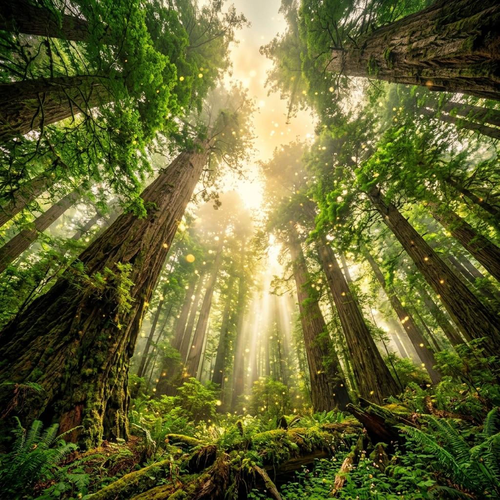
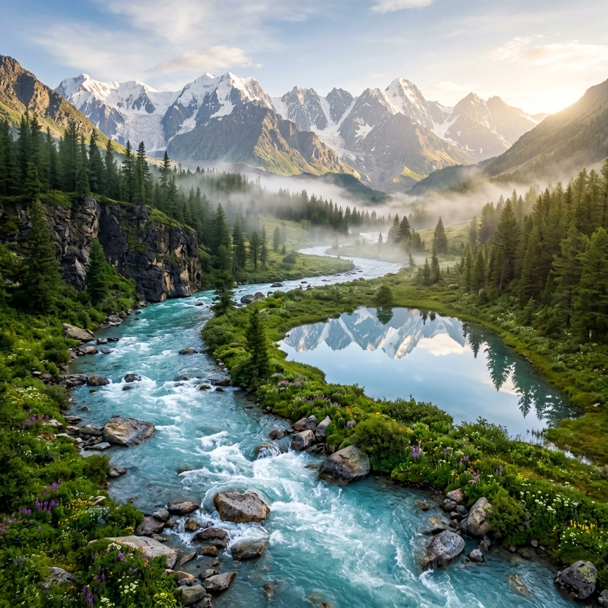

WHISPERS
OF THE EARTH
A slow, breathing journey through nature's quiet kingdoms.
"In all things of nature there is something of the marvelous."
— Aristotle
↓
SCROLL TO DRIFT
A slow, breathing journey through nature's quiet kingdoms.
"In all things of nature there is something of the marvelous."
— AristotleWhere trees speak in silent frequencies below the moss.
Underneath the damp soil of the emerald forest lies a vast, silent web. Trees are not isolated individuals; they are connected by microscopic fungal threads—a wood-wide-web. Through this network, ancient mother trees share sugars, alert neighbors of incoming threats, and nurture their small saplings.
"Between every two pines there is a sacred door leading to a new way of life."— John Muir
of the forest's life exists high above the forest floor, in the secret leaf-roof canopy, thriving in sunlight and breathing the earth's damp mist.

The flowing veins carrying the memory of glaciers.
Water is the great traveler. Every droplet flowing down the mountain stream has climbed high into storm clouds, slept as winter ice on alpine peaks, and slipped silently through the deep stone pores of the earth. In its flow, it carries nutrients, sculpts canyon cliffs, and feeds the deep roots of the valley below.
"Water does not struggle. It flows around obstacles, adapting to the contours of the earth, and finds the ocean by simply letting go."— Organic Zen Wisdom
years are stored in alpine glacial streams, carrying fresh minerals down to feed the wetlands and oceans.

Where alpine winds meet the high quiet sunset.
Up here, above the tree-line, life grows small, resilient, and patient. The alpine peaks stand as silent guardians. In these quiet heights, the atmosphere thins, and the sunset reflects off granite walls, casting long shadows of gold, pink, and dark amber across the clouds.
"The mountains are calling, and I must go, to find where the clouds rest and the sun fades into the silent valley."— Alpine Explorer
meters of granite and ice stand as silent witnesses to the slow, ancient tectonic shifts of our living planet.
"To look into the horizon is to find yourself in the harmony of all things. The forests that breathe, the rivers that flow, the peaks that reach, and the quiet space we share under the fading sun."